Dossier
Aides publiques aux entreprises. Les conclusions de la commission d’enquête du Sénat
Date de mise à jour indiquée par Facebook · 8 juillet 2025
Repères éditoriaux
Le rapport de la commission d’enquête, rendu public le 8 juillet 2025, pose la question de la transparence, des conditions d’attribution et de l’évaluation des aides aux entreprises. Les treize visuels présentent les conclusions et propositions de la commission.
Texte de la publication · Fabien Gay
EN RESUMÉ - Les conclusions du rapport de la commission d'enquête portant sur les aides publiques aux grandes entreprises et à leurs sous-traitants
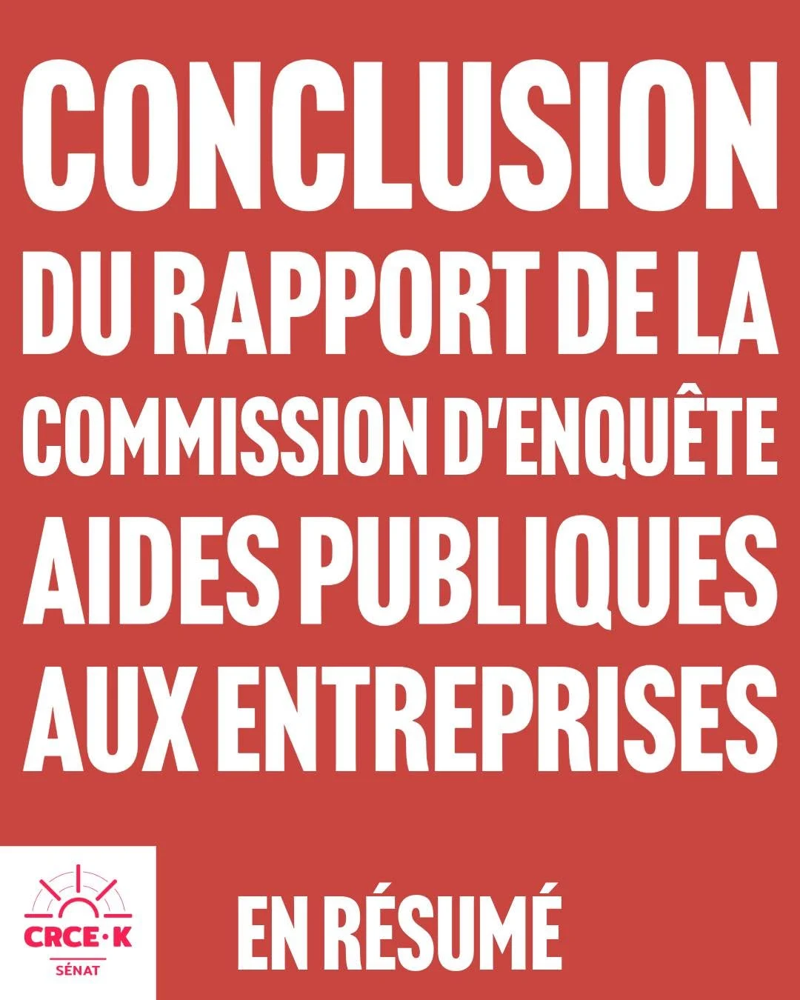
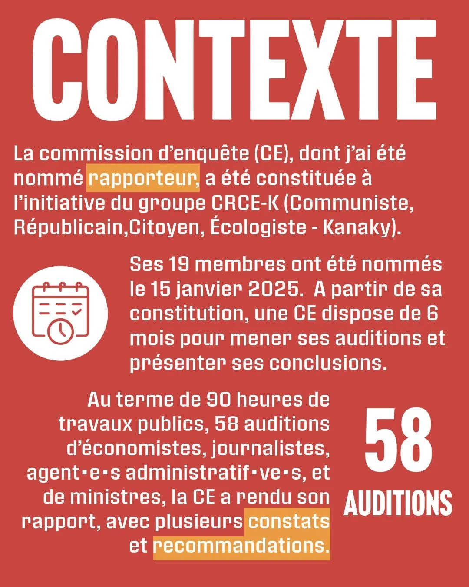
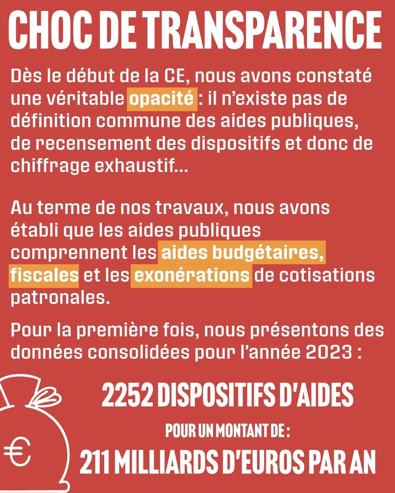
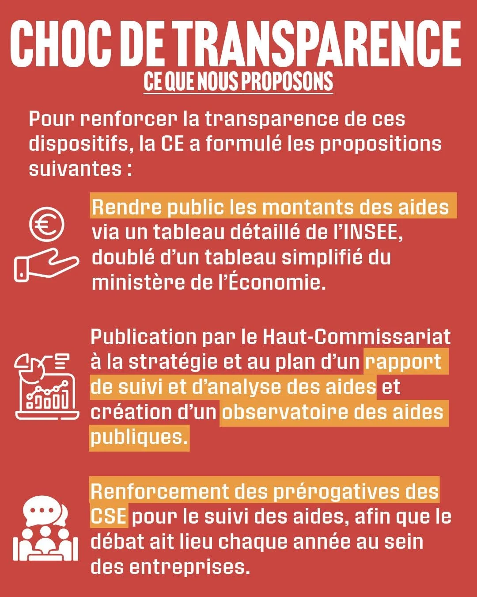
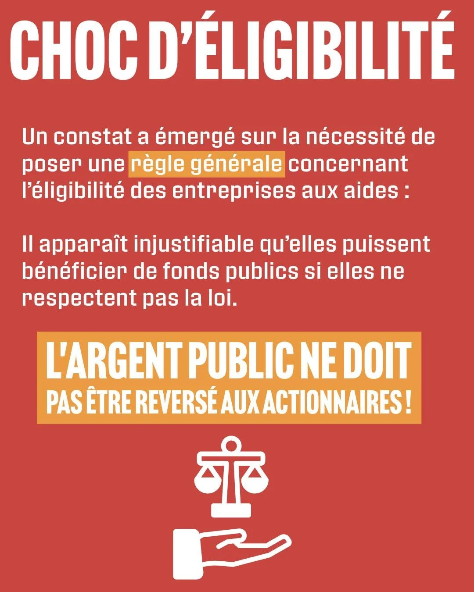
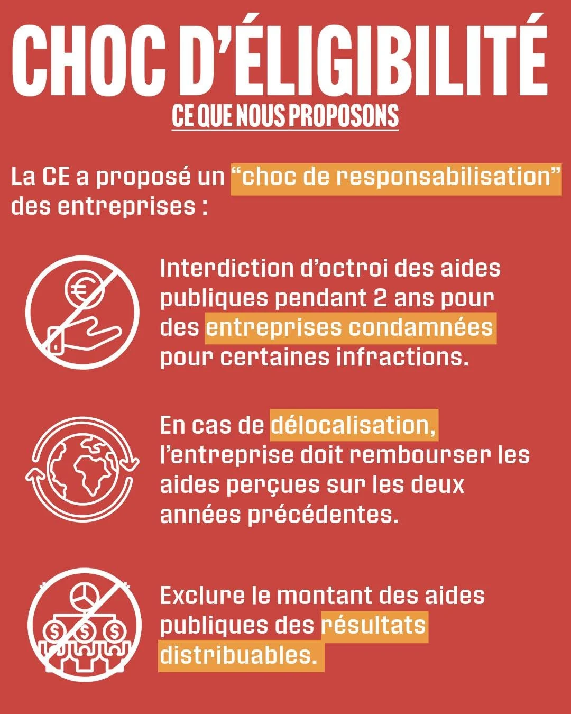
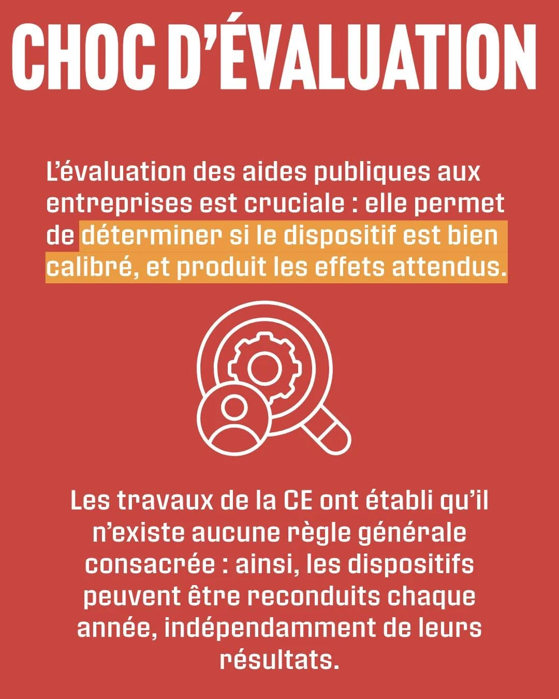
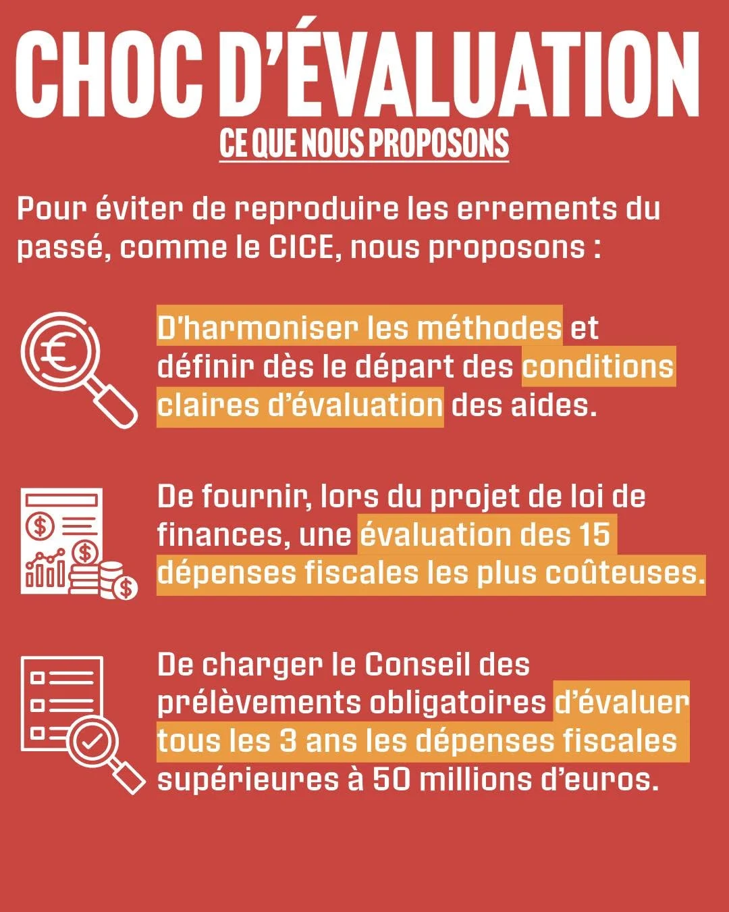
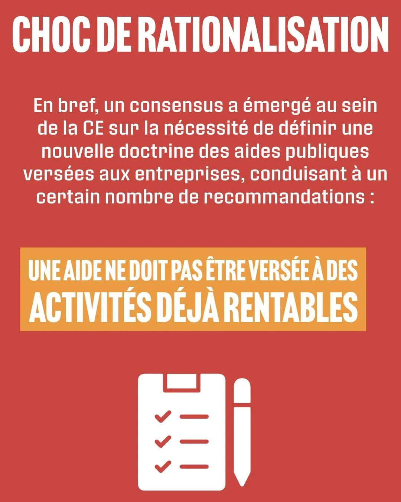
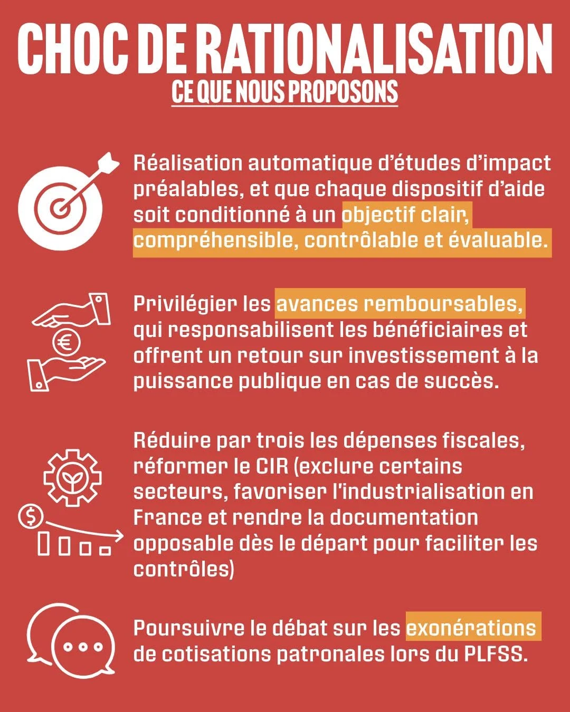
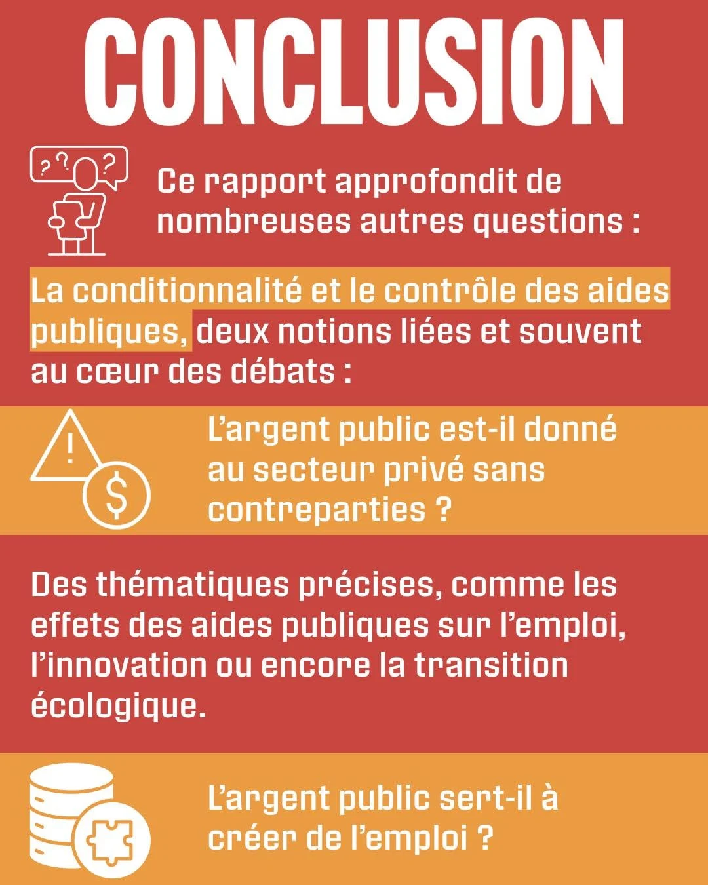
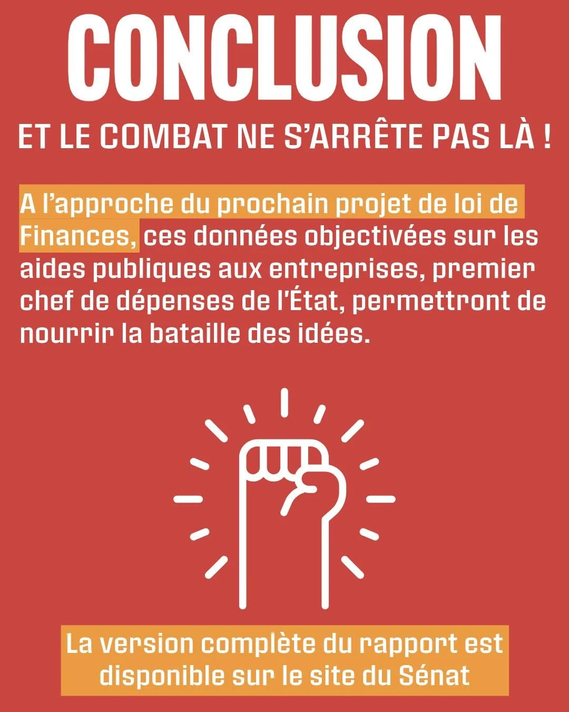
Sources
Fabien Gay · publication relayée par le PCF 79 · bibliothèque Facebook · AR-0002-FB-01074
À lire aussi · Aides publiques aux entreprises. Le rapport chiffre 211 milliards d’euros pour 2023